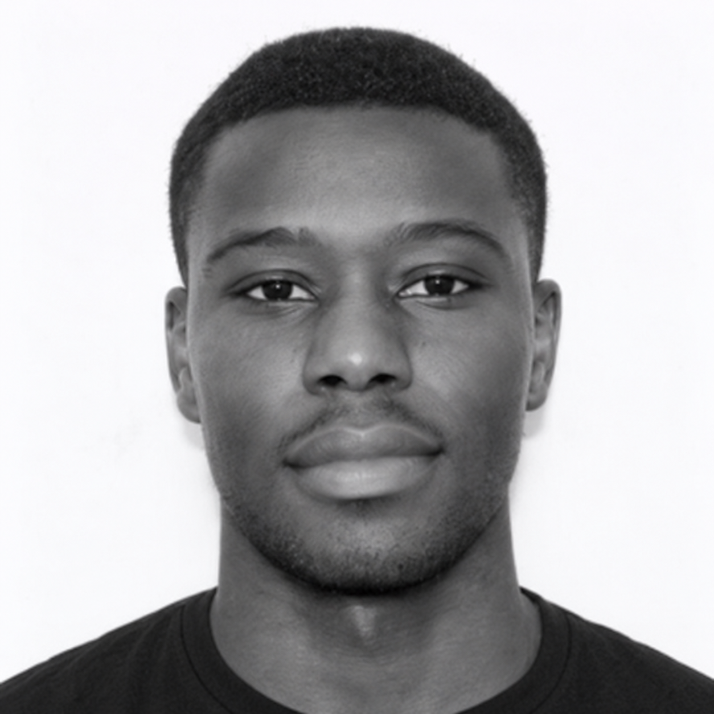

Security Operations
Threat detection, incident response, log analysis, alerting, and monitoring using SIEM and security tooling.
Cybersecurity & IT operations professional
I’m Damilola Ekundayo, an IT security professional with 3+ years of experience delivering cyber defence, incident response, secure operations, and technical support across cloud, network, and enterprise environments.

Selected work
My recent work focuses on practical cyber defence, resilient IT operations, secure system design, and driving continuous improvement across technical environments.
A little about me
I blend cybersecurity, IT operations, and technical troubleshooting to help organisations reduce risk, strengthen monitoring, and keep systems reliable in fast-moving environments.
From incident response and patch management to secure network design and user support, I focus on practical improvement that supports both business continuity and security resilience.
Let’s connect ↗What I bring
I work across security monitoring, cloud and network security, troubleshooting, and continuous improvement to keep systems protected and dependable.
Threat detection, incident response, log analysis, alerting, and monitoring using SIEM and security tooling.
Azure security fundamentals, network design, packet analysis, firewall configuration, and secure architecture support.
Windows/Microsoft 365 administration, device setup, troubleshooting, patching, and operational support at scale.